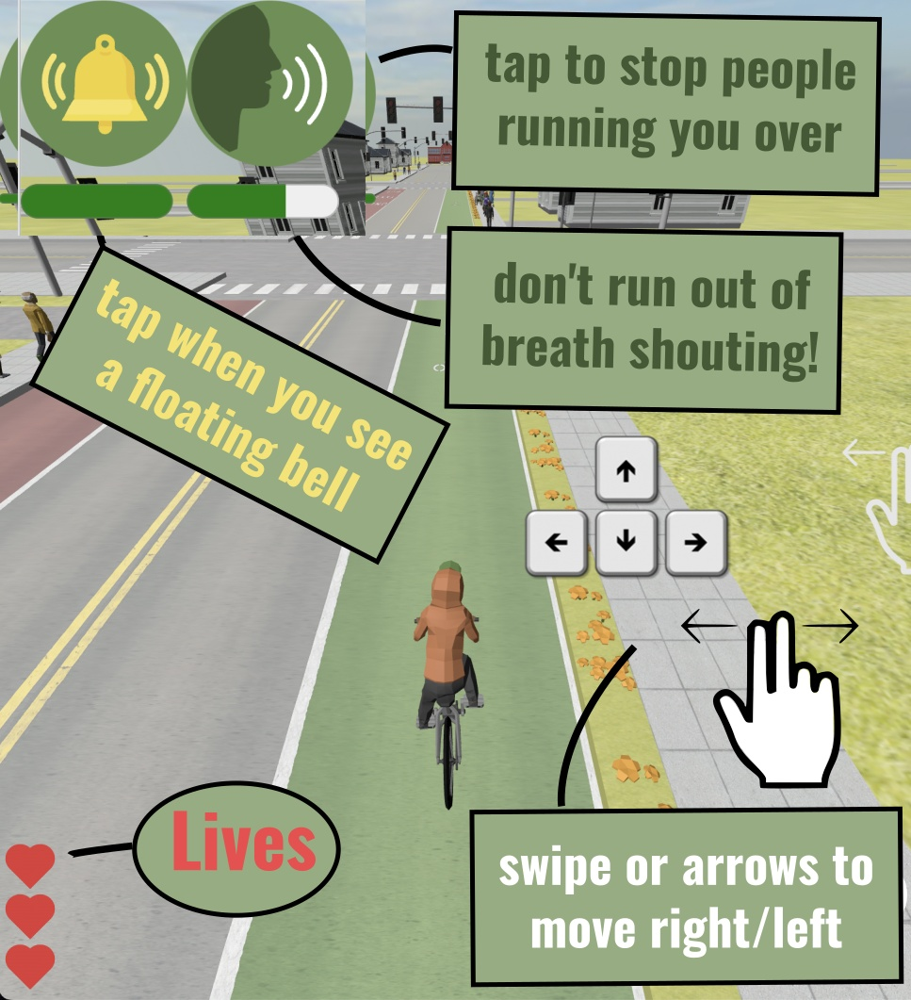

You are leading a group of children to school. Tap the bell for them to follow you. Tap the voice icon to help people driving notice you and keep the children safe. Good luck!
Loading ...
Data tbd
A game by Loud Bicycle
Jonathan Lansey
Kieran Farr
Florian Isikci
0